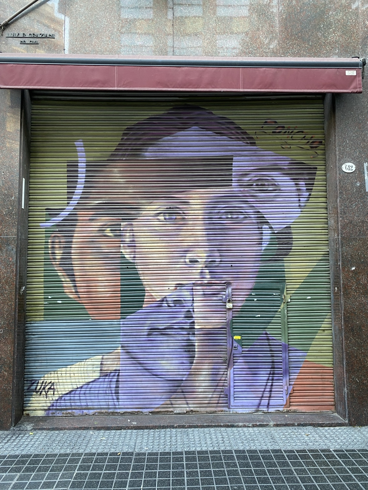
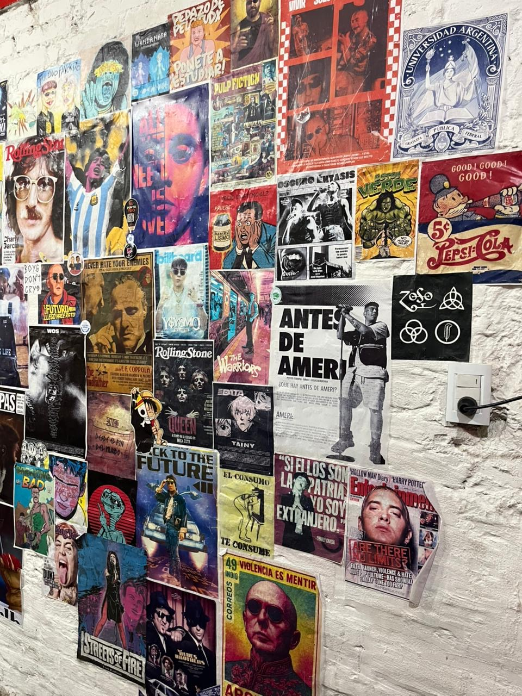

Cuándo mirar
Las intervenciones exteriores se disfrutan mejor durante el día. Algunas obras pueden cambiar, deteriorarse o desaparecer con el tiempo.
ARTE URBANO · PAREDES QUE HABLAN
Murales, grafitis, stencils y otras intervenciones registradas en distintos espacios. Una invitación a mirar el arte que aparece en el recorrido cotidiano.
Empezar a recorrer
Antes de recorrer
La propuesta reúne intervenciones encontradas en paredes, persianas, edificios y espacios públicos. Cada fotografía permite conocer dónde fue tomada y observar qué elementos forman parte de la obra.

Ni Una Menos 2026 · Intervención colectiva
Fotografías, recortes, frases, dibujos y mensajes colocados uno junto a otro durante una marcha de Ni Una Menos.
Abrir información de Expresión colectivaUbicación: Intervención temporal · ubicación y fecha pendientes de revisión.
Experiencia: Observación exterior y registro fotográfico de las obras.
Acceso y horarios: Espacio exterior. Preferí las horas de luz; las obras pueden cambiar con el tiempo.
Esta parada conserva el contenido del prototipo. Su ubicación se completará después del review.
Microcentro · Mural en blanco y negro
Un mural que representa a Astor Piazzolla tocando el bandoneón y hace referencia al tango y a la cultura porteña.
Abrir información de Astor PiazzollaUbicación: Microcentro · dirección exacta pendiente de revisión.
Experiencia: Observación exterior y registro fotográfico de las obras.
Acceso y horarios: Espacio exterior. Preferí las horas de luz; las obras pueden cambiar con el tiempo.
Esta parada conserva el contenido del prototipo. Su ubicación se completará después del review.
Parque Patricios · Estación Hospitales
Mural de gran escala ubicado en la plaza junto a la estación Hospitales. La obra ocupa gran parte de una fachada y se destaca por el detalle de sus figuras.
Abrir información de Realidades poco frecuentesUbicación: Parque Patricios · referencia: estación Hospitales.
Experiencia: Observación exterior y registro fotográfico de las obras.
Acceso y horarios: Espacio exterior. Preferí las horas de luz; las obras pueden cambiar con el tiempo.
Ver ubicación y recorrido →Las intervenciones exteriores se disfrutan mejor durante el día. Algunas obras pueden cambiar, deteriorarse o desaparecer con el tiempo.
Las fotografías fueron tomadas en distintos espacios. Antes de visitar una obra conviene consultar su ubicación y organizar el traslado según la zona.
Calzado cómodo, agua y un celular o cámara para registrar las obras. Es importante respetar las intervenciones y los espacios donde se encuentran.